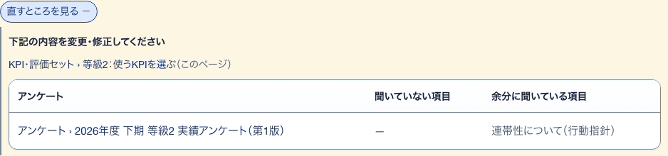
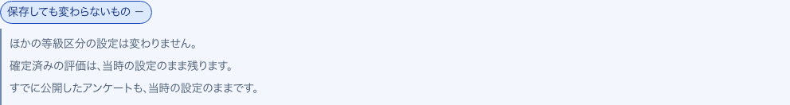
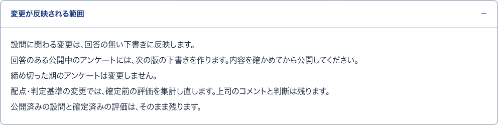
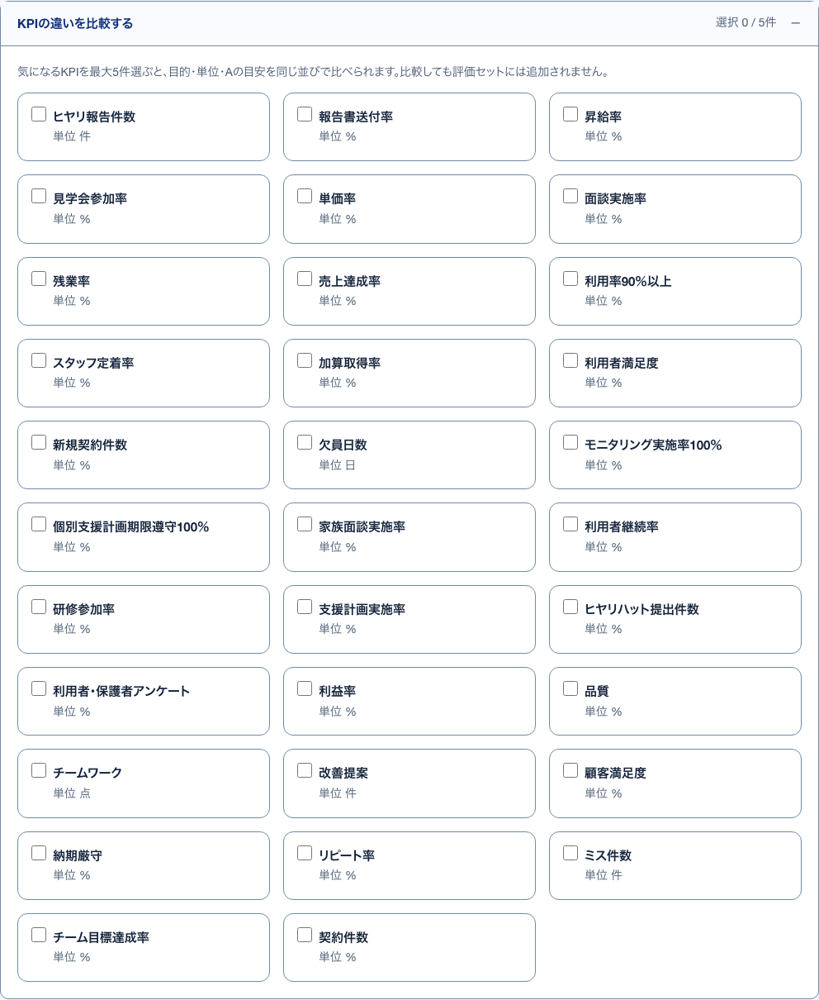

1ずれた下書きの一覧見本
S17 KPI・評価セット ・ 押すもの: 「内容を見る」 ・ 閉じる: 閉じる
中に出るもの
- 結果の一文
- 下書きごとのそろえる向き（設定に合わせて作り直す・下書きの直しを設定へ反映する）
- そろえられない下書きとその理由
中で押せるもの
- そろえる: 確認の小窓を出す
- 直す画面を開く: そろえられない下書きの組み立てへ移る（→ S29）
- 閉じる: 並べた中身を閉じる
5評価項目とのズレ開いて見る
S18 使うKPIを選ぶ ・ 押すもの: 「直すところを見る」

中に出るもの
- 下記の内容を変更・修正してください
- この画面への道順
- アンケートごとの表（アンケート・聞いていない項目・余分に聞いている項目）
中で押せるもの
- アンケートの名前: そのアンケートの組み立てへ移る（→ S29）
2下書きをそろえる確かめる小窓
S17 KPI・評価セット ・ 押すもの: 「そろえる」 ・ 閉じる: やめる
中に出るもの
- n件の下書きをそろえます。
- 作り直す下書きと、設定の文が下書きに合わせて変わる下書きの説明
中で押せるもの
- そろえる: 回答の無い下書きを並べた向きにそろえる
- やめる: 小窓を閉じる。何も変わらない
4確定済みの評価が動かない理由開いて見る
S17 KPI・評価セット ・ 押すもの: 「確定済みの評価が動かない理由」
中に出るもの
- 確定済みの評価は判定した当時の値を控えている
- そのため今の基準では集計し直さない
7保存しても変わらないもの開いて見る
S18 使うKPIを選ぶ ・ 押すもの: 「保存しても変わらないもの」

中に出るもの
- ほかの等級区分の設定
- 確定済みの評価（当時の設定のまま）
- すでに公開したアンケート（当時の設定のまま）
3変更が反映される範囲開いて見る
S17 KPI・評価セット ・ 押すもの: 「変更が反映される範囲」

中に出るもの
- 設問に関わる変更は回答の無い下書きに反映
- 回答のある公開中のアンケートには次の版の下書きを作る
- 締め切った期のアンケートは変えない
- 配点・判定基準の変更では確定前の評価を集計し直す
- 公開済みの設問と確定済みの評価はそのまま残る
6KPIの違いを比較する開いて見る
S18 使うKPIを選ぶ ・ 押すもの: 「KPIの違いを比較する」

中に出るもの
- 項目ごとのチェック（名前・単位）
- 選んだ項目の分類／単位・評価する目的・Aの目安
中で押せるもの
- 項目のチェック: 比べる項目に入れる・外す（5件まで。評価セットには足されない）